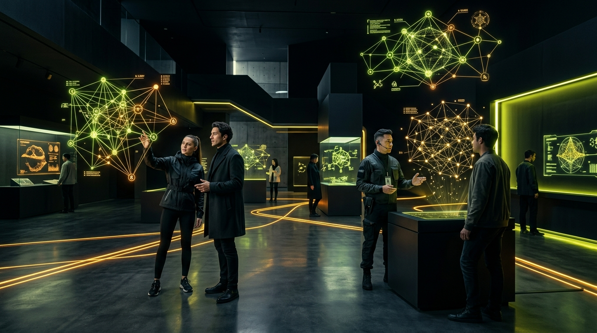
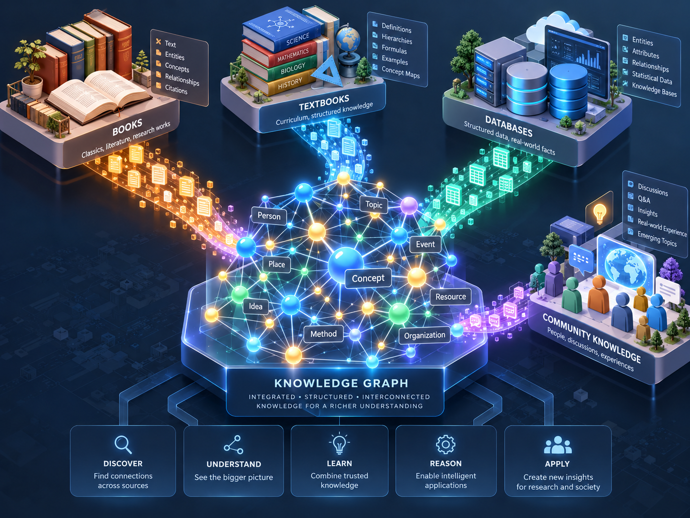

GRURU MUSEUM: อดีตคือข้อมูล อนาคตคือเรื่องเล่า
“New Knowledge. New Storytelling. Built for Everyday Living.”
พิพิธภัณฑ์ความรู้ดิจิทัลแนวคิด Future Archaeology ที่ปะทะสองขั้วระหว่าง Modern Art Gallery กับ Sci-Fi Lab เพื่อปลุกภูมิปัญญาที่ซ่อนอยู่ในอดีตให้กลายเป็นคุณค่าในชีวิตประจำวัน
NEW KNOWLEDGE
ความรู้ที่ถูกขุดค้น ถอดรหัส และตรวจสอบแหล่งที่มาได้ 100% ย้อนมองอดีตด้วยมุมมองวิทยาศาสตร์และเทคโนโลยีร่วมสมัย
NEW STORYTELLING
เล่าด้วยภาพ กราฟความรู้ (Data Booming) และการมีส่วนร่วม แทนบทความขนาดยาว ออกแบบให้เข้าใจโครงสร้างหลักภายใน 3 วินาที
BUILT FOR EVERYDAY LIVING
ทุกนิทรรศการจบลงด้วย Everyday Takeaway สรุปวิธีนำบทเรียนในอดีตมาปรับใช้กับสุขภาพ งาน และการใช้ชีวิตในปัจจุบัน

ตำแหน่งแบรนด์: สนุกแต่มีหลักฐาน เชื่อมโยงเป็นเครือข่าย
ตอบโจทย์คนวัย 22–40 ปีที่ต้องการความเข้าใจลึกกว่าคลิปสั้น แต่ไม่อยากรู้สึกเหมือนนั่งฟังเลกเชอร์
บุคลิกแบรนด์: ภัณฑารักษ์จากอนาคต (Future Curator)
ฉลาดแต่ไม่เก๊ก ขี้เล่นแต่มีหลักฐานอ้างอิงเสมอ ไม่สั่งสอน แต่ชวนสังเกตและตั้งคำถามกับโลกรอบตัว
คำสัญญาของแบรนด์ (Brand Promise)
ทุกการเยี่ยมชมนิทรรศการ ผู้ใช้ต้องได้ อย่างน้อย 1 เรื่อง นำกลับไปใช้ปรับพฤติกรรมหรือสร้างแรงบันดาลใจในชีวิตจริงได้ทันที
Past Warm × Future Electric
การผสานสีอุ่นจากอดีต (Ember Orange, Archive Paper) เข้ากับสีไฟฟ้าแห่งอนาคต (Specimen Lime, Cyan) บนความลุ่มลึกของ Void Black
พันธกิจ 5 ขั้น: Excavate ➔ Decode ➔ Retell ➔ Connect ➔ Apply
โครงเรื่องและระบบผลิตเนื้อหามาตรฐาน สำหรับทุกนิทรรศการในพิพิธภัณฑ์
EXCAVATE
คัดกรองขุมทรัพย์ความรู้จากประวัติศาสตร์ วิทยาศาสตร์ และภูมิปัญญาโบราณ พร้อมระบุแหล่งที่มา (Provenance) ทุกชิ้นงาน
DECODE
แปลงข้อมูลดิบให้เป็นโหนด (Nodes) ความสัมพันธ์ (Edges) และเชื่อมโยงข้ามศาสตร์ในโครงข่ายกราฟความรู้
RETELL
นำเสนอเป็น Visual Storytelling สไตล์ Modern Art ที่ย่อยง่าย จบได้ใน 3–5 นาที โดยไม่ต้องอ่านบทความยาว
CONNECT
เปิดให้ผู้ใช้ระเบิดความรู้ด้วย Data Booming และท่องแผนที่ Interactive Graph เพื่อค้นพบมุมมองใหม่ด้วยตนเอง
APPLY
สรุปเป็นการ์ด Everyday Takeaway บันทึกวิธีนำไปใช้ในชีวิตประจำวัน ปิดท้ายทุกเรื่องอย่างทรงคุณค่า
หัวใจเบื้องหลัง: Integrated Knowledge Graph
เชื่อมโยงและสังเคราะห์ข้อมูลจาก 4 แหล่งความรู้ของมนุษยชาติ เพื่อสร้างความเข้าใจที่ลึกซึ้งและแม่นยำ
01. BOOKS (หนังสือ & คลาสสิก)
FOUNDATIONALวรรณกรรมชิ้นเอก, งานวิจัยประวัติศาสตร์, และบริบททางวัฒนธรรมที่สั่งสมมานับพันปี
02. TEXTBOOKS (ตำราเรียน & หลักสูตร)
STRUCTUREDนิยามแม่นยำ, ลำดับชั้นแนวคิด (Taxonomies), สูตรคำนวณ, และแผนภาพทางวิทยาศาสตร์
03. DATABASES (ฐานข้อมูลจริง & สถิติ)
FACTUAL FACTSชุดข้อมูลสถิติจริง, พิกัดเวลา, ความสัมพันธ์เชิงโครงสร้าง, และข้อมูลวิจัยเปิด (Open Data)
04. COMMUNITY KNOWLEDGE (ภูมิปัญญาผู้คน)
LIVED EXPERIENCEประสบการณ์จริงในการใช้ชีวิต, ข้อสงสัย, บทสนทนา, และมุมมองที่นำไปใช้ได้ในสังคม

Data Booming: 1 โหนด สู่จักรวาลความรู้ ใน 3 วินาที
ทดลองคลิกโหนดกลาง หรือกดปุ่ม EXPLODE / BOOM เพื่อสังเกตการระเบิดของความรู้ทีละชั้น (สูงสุด 3 ระดับ)
Interactive Graph: สำรวจโครงข่าย 6 หมวดตามใจคุณ
แยก 6 หมวดด้วยสีและรูปทรงเรขาคณิต (WCAG AA Certified) พร้อมระบบลากโหนด กรองหมวดหมู่ และเลื่อนดูยุคสมัย
กลุ่มเป้าหมาย 3 บุคลิก: อยากรู้ลึก แต่ไม่อยากรู้สึกว่ากำลังเรียน
กลยุทธ์ออกแบบตอบสนอง Insight ร่วมของผู้ใช้ทั้ง 3 กลุ่มหลักอย่างแม่นยำ
CURIOUS STARTER
- ใช้มือถือเป็นหลัก (Mobile-First)
- ชอบของสวยงาม มีสไตล์ และแชร์ต่อได้ทันที
- ต้องการเรื่องเล่าที่ดูจบได้ใน 3–5 นาที
- ชื่นชอบการ์ดความรู้ขนาด 1080×1350 px สำหรับโพสต์ IG/Threads
CREATIVE PROFESSIONAL
- มองหาไอเดียและแรงบันดาลใจแปลกใหม่ข้ามศาสตร์
- ต้องการแหล่งอ้างอิงที่เชื่อถือได้และตรวจสอบได้จริง
- ใช้งาน Interactive Graph ในระดับเจาะลึก
- ต้องการระบบบันทึกคอลเลกชันส่วนตัว และดาวน์โหลดชุดข้อมูล
LIFELONG LEARNER
- อยากรู้เบื้องลึกที่มาของสิ่งรอบตัว เช่น อาหาร สุขภาพ วิทยาศาสตร์
- ใส่ใจความน่าเชื่อถือและความสบายตาในการอ่าน
- เน้นที่คุณค่าในชีวิตจริง ไม่ใช่ทฤษฎีลอยๆ
- มองหา Everyday Takeaway ที่นำไปใช้กับครอบครัวได้
แผนดำเนินงาน 4 เฟส: สถาปัตยกรรมพร้อมต่อยอดสู่อนาคต
พัฒนาด้วย Next.js + TypeScript + Tailwind CSS + D3.js รองรับการสเกลชุดข้อมูลความรู้ระดับหมื่นโหนด
Design Tokens & Style Guide
กำหนด CSS Variables สีหลัก 70-20-10, ฟอนต์ Chakra Petch, IBM Plex, การ์ดตัดมุม HUD, และตรวจสอบค่าความคมชัดผ่าน WCAG AA
Components & Micro-interactions
Specimen Label, Time Rings Radar, Data Booming Radial Engine, และตัวแปลงภาพ Half-tone 2 สี
Full Exhibition Halls & Social Cards
สร้างหน้า Home, Hall 01 Exhibitions, Hall 02 Knowledge Graph, Everyday Lab และเครื่องมือ Export การ์ด 1080×1350 px
Production Rollout & 10,000+ Node Scaling
เปิดให้บริการสาธารณะ พร้อมเชื่อมระบบ Semantic Search และเปิด API ชุดข้อมูลสู่สาธารณะ
ขออนุมัติเริ่มการพัฒนาเต็มรูปแบบ
พร้อมส่งต่อ Project Brief และ Design System ให้ Google Antigravity ดำเนินการสร้างทันที